115 年度大學生暑期學習實務體驗計畫 · 實作類
整合 LOS 導引之小型雙推 USV 自主航行系統開發
張席暢 國立臺灣海洋大學 輪機工程學系
執行期間 2026-07-01 – 2026-08-31 · 實船測試 2026-09-09
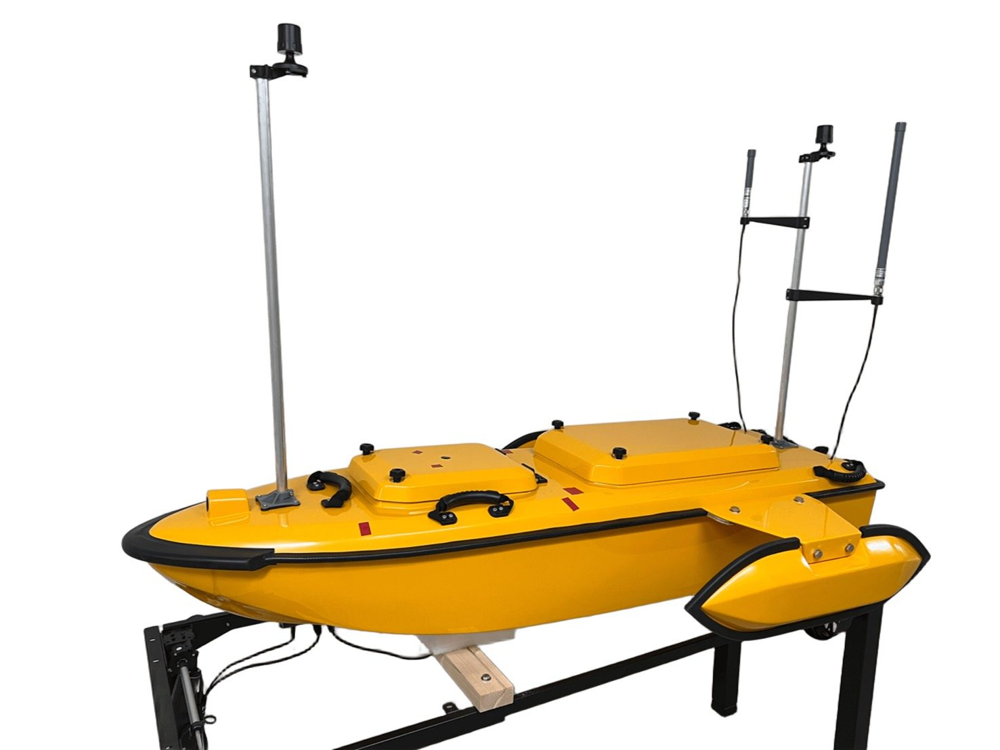
01 · 概述
從感測到推進器的完整自主航行控制鏈
本計畫以小型雙推進器無人水面載具（USV）為平台，建立自主航行的軟硬體架構：NVIDIA Jetson Nano 負責任務管理、路徑規劃與航向控制，ESP32-S3 負責讀取雙天線 GNSS、轉送 LoRa 岸端指令並輸出推進器 PWM。船舶以左右推進器的差動推力轉向。
系統於實際水域完成 Z 字形、八字形與大圓環三種多航點航線測試。直線與平緩連續轉向段追蹤穩定；Z 字形銳角處則出現明顯轉向不足，後續分析指向導引命令階躍、缺少偏航角速度回授與船體動態限制。
原規劃的 VO（速度障礙法）即時避障，目前完成方法規劃與 YOLO＋ZED X 浮標辨識與測距，尚未完成實船閉迴路整合與驗證。
已完成
- Jetson Nano＋ESP32-S3 船載控制架構
- 港區多邊形地圖與 A* 多航點規劃
- LOS 前視導引、PID 差速控制
- 三種航線實船測試與完整航行紀錄
- LoRa 岸端指令、RC 人工接管備援
進行中
- IMU 偏航角速度回授與航向融合
- VO 避障與視覺感知閉迴路整合
- 重複試驗與誤差統計
成果影片
02 · 實驗平台
雙體船殼、雙推進器、雙天線 GNSS
船體採雙體構型，兩側船尾各一組水推進器，船艏與船艉各架一支 GNSS 天線桿，以兩天線基線直接量測船艏航向，低速時也能取得絕對航向。


主要硬體
| 硬體／模組 | 功能 | 介面 |
|---|---|---|
| NVIDIA Jetson Nano | 任務管理、A* 規劃、LOS 導引、航向控制、紀錄；視覺推論 | USB 序列 ↔ ESP32-S3 |
| ESP32-S3 | 讀取 GNSS／IMU、轉送 LoRa 指令、輸出 PWM、CH2 切換保護 | UART · I²C · USB |
| 雙天線 GNSS | 經緯度、定位狀態、船艏航向（控制唯一航向來源） | UART |
| BNO055 IMU | 姿態與角速度，目前僅記錄、未進入控制 | I²C |
| PCA9685 | 產生推進器 PWM（左 CH0、右 CH1） | I²C |
| ESC ×2、左右水推進器 | 前進推力與差動轉向力矩 | PWM 1000–2000 µs |
| E32 LoRa／ESP32-C6 遙控主機 | 岸端下達航點、START／STOP | LoRa |
| RC 接收機＋RC-SW | 2.4 GHz 人工遙控與緊急接管 | PWM |
| ZED X 雙目相機 | 前方影像與深度，尚未接入控制迴路 | GMSL2 → Jetson |
資料來源：成果報告表 2.2.1；介面依 AS_ESP32S3/src/main.c 與 AutoShip/serial_comm.py。
03 · 系統架構
四層架構與實際程式模組
感測資料由 ESP32-S3 每 50 ms 以 $EXT 訊框送到 Jetson；Jetson 以 10 Hz 計算導引與控制，再以 $PWM 指令回傳左右推進器脈寬。
互動式架構圖
點選圖中元件可查看對應程式碼檔案與行號（依 commit 6e0cef6）。
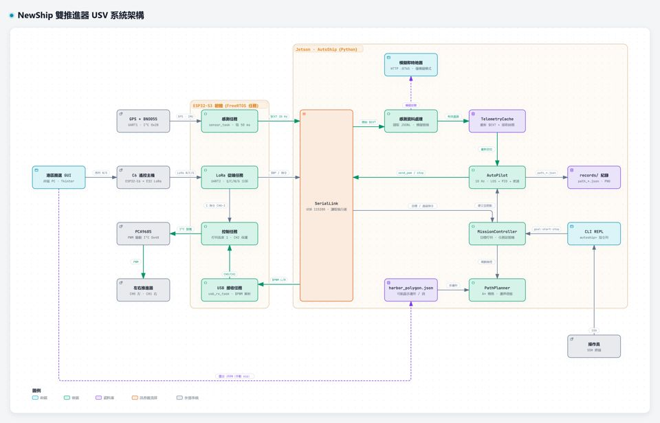
系統架構
岸端 GUI、C6 遙控、ESP32-S3 韌體任務與 Jetson 模組之間的訊號方向。
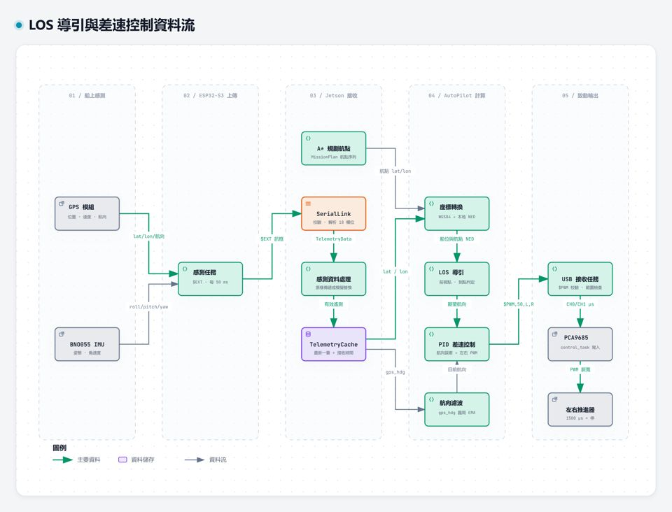
導引與控制資料流
GPS／IMU → $EXT → NED 座標 → LOS → PID → $PWM → 推進器。
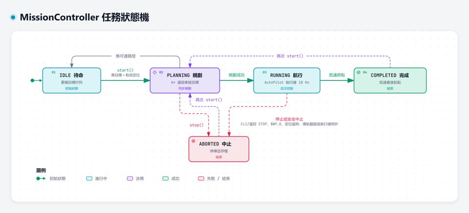
任務狀態機
IDLE、PLANNING、RUNNING、COMPLETED、ABORTED 與轉移條件。
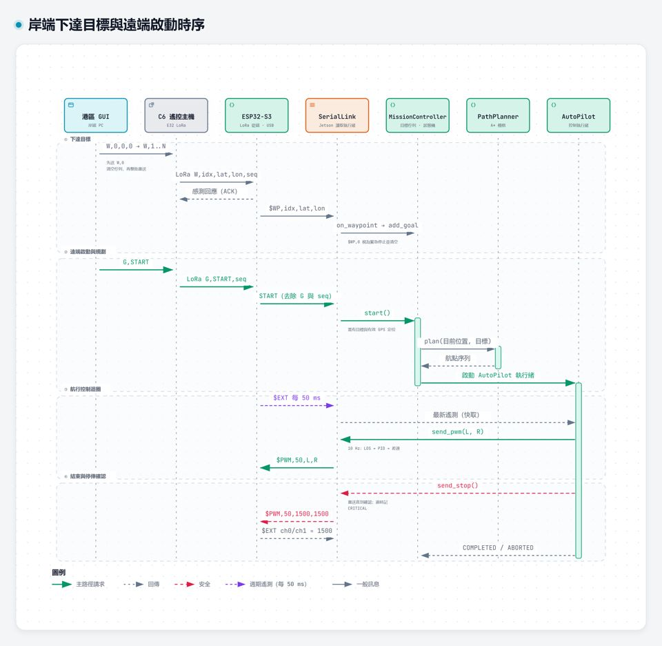
遠端啟動時序
GUI 送航點與 START、A* 規劃、控制迴圈與停俥回授確認。
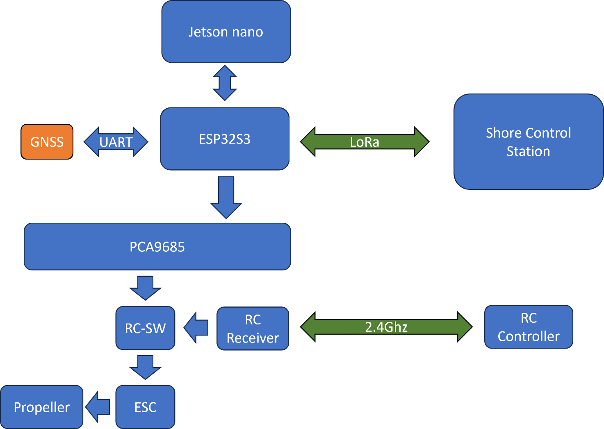
通訊協定
| 訊框 | 方向 | 內容 |
|---|---|---|
$EXT | S3 → Jetson | 18 欄位遙測（位置、航向、姿態、CH0–CH3）＋ XOR 校驗，20 Hz |
$PWM | Jetson → S3 | 頻率與左右推進器脈寬；只寫 CH0／CH1 |
$WP | S3 → Jetson | LoRa 轉送的目標點；$WP,0 為緊急停止 |
START／STOP | S3 → Jetson | 岸端經 LoRa 下達的任務啟停 |
規格：AutoShip/PROTOCOL.md、protocol.py
04 · 導引與控制方法
A* 規劃 → LOS 前視導引 → PID 差速
港區可航區由 GUI 圈選的多邊形（扣除島、碼頭等禁航區）組成，柵格化並向內侵蝕 1 m 後以 A* 規劃。航行時，船舶不直接衝向航點，而是瞄準航段上前方 8 m 的點，讓偏離後能平順地回到「已檢查過不會碰撞」的規劃線。
LOS 前視導引示意：拖曳船位或用方向鍵移動
LOS 瞄準線直接指向航點（比較）
導引
t = 船位在航段 P(k−1)→P(k) 上的投影比例 L = min(8 m, 航段長 / 2) aim = P(k−1) + min(max(t,0) + L/航段長, 1)·(P(k) − P(k−1)) ψd = atan2(x_aim − x, y_aim − y)
控制
eψ = wrap(ψd − ψ) ψ：雙天線 GNSS 航向（EMA 平滑） ΔPWM = clip(Kp·eψ + Ki∫eψ + Kd·ėψ, ±400) |eψ| < 5° 時為 0 PWM_L = clip(PWM_b + ΔPWM, 1500, 2000) PWM_R = clip(PWM_b − ΔPWM, 1500, 2000)
到點判定：連續 3 次落在 3 m 內，或已越過航點的垂直面（避免過衝後繞圈）。基礎推力 PWM_b 平時 1700 µs，航向誤差 > 10° 時降為 1600 µs，最後一個航點前 10 m 線性降到 1600 µs。
AutoShip/navigation.py · thruster_controller.py · autopilot.py · config/settings.json
實測參數（09-09 紀錄）
- Kp = 10、Ki = 0、Kd = 8（單位：µs／度）
- 差動上限 ±400 µs，推進器 1500–2000 µs（不倒轉）
- 控制 10 Hz，航向 EMA α = 0.3
導引方式由資料驗證
- 紀錄的目標航向與 LOS 前視點方位：中位數差 0.12°
- 與「直接指向航點」：中位數差 0.26°–3.04°
- 實測確實採用前視導引，而非單純指向航點
安全機制
- 定位逾時 3 s 即中止任務，不自動恢復
- 停俥指令重送，直到遙測回報兩推進器 1500 µs
- CH2 切換人工模式時推進器先漸變至中立
05 · 實船測試
三種航線的航跡回放
2026-09-09 於實際水域測試三種航線：Z 字形（銳角、航向大幅跳變）、八字形（左右轉向交替）、大圓環（同向平緩轉彎）。以下資料直接取自 Jetson 的 10 Hz 航行紀錄，座標為相對於首筆定位的東、北向距離。
規劃路徑實際航跡目標航向
目標航向與實際航向（°）
目標實際
左右推進器 PWM（µs）
左右
- 時間
- –
- 目標航點
- –
- 航向誤差
- –
- 實際航向
- –
- 目標航向
- –
- PWM 左 / 右
- –
量化比較
| 指標 | Z 字形 | 八字形 | 大圓環 |
|---|---|---|---|
| 航點數／時間 | 7／239.9 s | 17／369.7 s | 16／242.9 s |
| 實際航程（規劃長度） | 268.4 m（256.5） | 372.5 m（370.7） | 258.6 m（259.3） |
| 平均航速 由定位換算 | 1.12 m/s | 1.01 m/s | 1.06 m/s |
| 橫向偏差 平均／RMS | 1.16／1.63 m | 0.51／0.81 m | 0.29／0.44 m |
| 橫向偏差 P95／最大 | 3.50／6.21 m | 1.73／3.88 m | 0.61／2.50 m |
| 航向誤差中位數 | 3.8° | 3.8° | 3.7° |
| 航向誤差 ≤ 10° 的時間比例 | 80.0% | 84.4% | 84.8% |
| 差動輸出達上限 ±400 µs | 9.1% | 2.5% | 1.7% |
| 最終與終點距離 | 2.90 m | 2.86 m | 2.89 m |
計算方式：橫向偏差＝每筆定位到規劃折線的最短距離（規劃起點以首筆定位代替）；航向誤差＝|wrap(目標 − 實際)|，含航點切換瞬間。資料：AutoShip/records/path_20260909_185114 / 185702 / 190442.json，每次各一趟，未重複試驗。
大圓環
航跡與規劃最吻合，差動輸出維持穩定的單側偏置；平緩連續的航向命令追蹤最好。
八字形
可完成左右轉向切換；切換處因既有偏航運動，航跡仍有偏差。可用於檢視左右推進器對稱性。
Z 字形
直線段正常；銳角處船艏轉不過來，航跡沿原方向延伸後才收斂，最大偏差 6.2 m，差動輸出飽和比例最高。
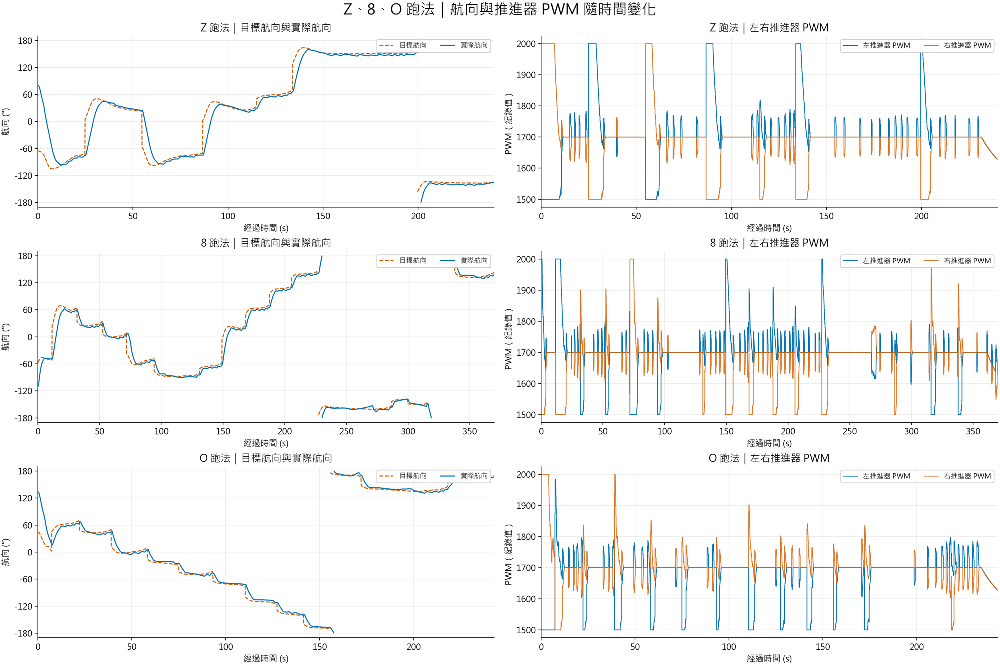
06 · 視覺感知
YOLO 浮標辨識與 ZED X 深度測距
在 Jetson 上部署 YOLO26 浮標辨識模型，以 ZED X 雙目相機的深度資料依辨識框取得目標距離，作為後續 VO 避障的障礙物感知來源。
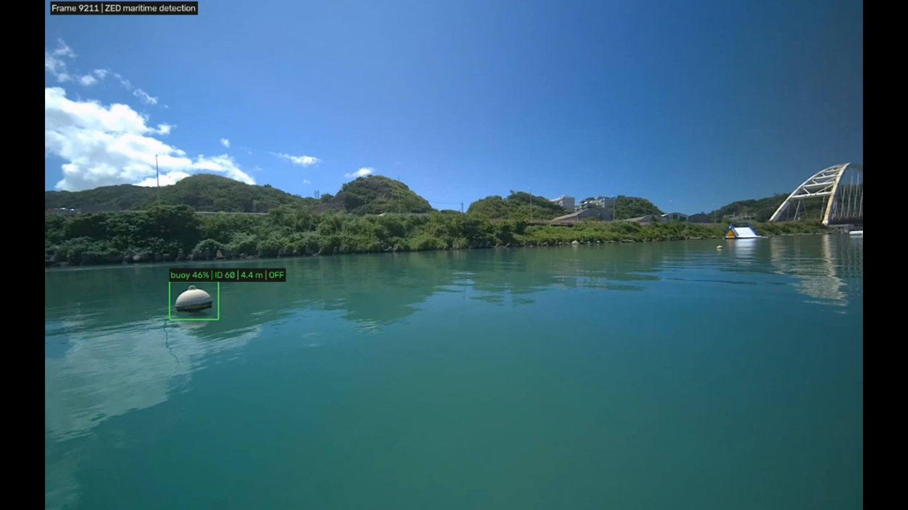
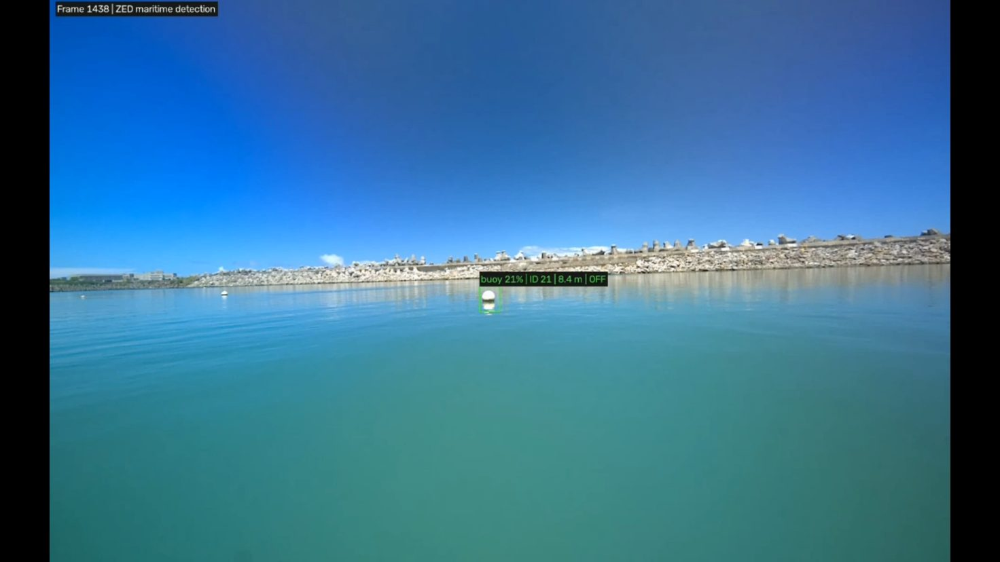
目前驗證的是模型部署與深度取得能正常運作，尚未量化辨識率與距離誤差；視覺模組的程式碼不在本專案倉庫中，辨識結果也還沒有接入 VO 避障與控制迴路。
07 · 討論與限制
為什麼 Z 字形會轉向不足
導引
航點切換時，新航段方向讓目標航向瞬間跳變；導引命令沒有考慮船舶有限的轉彎半徑。
控制
參數仍是初步測試值；航向僅來自雙天線 GNSS，缺少 IMU 偏航角速度回授，難以在轉向初期建立力矩、接近目標時適當阻尼。
船體動態
質量、轉動慣性與水動力阻尼使偏航無法瞬間改變；推進器不倒轉（下限 1500 µs）時，差動力矩有限。
資料佐證：Z 字形差動輸出達上限的時間比例（9.1%）為大圓環（1.7%）的五倍以上，代表控制器已輸出極限仍無法跟上航向命令。
目前限制
- 航向完全依賴雙天線 GNSS，尚無高頻偏航角速度資訊
- 控制參數未經系統化的實船辨識與調整
- 船體轉動慣性、阻尼與推力特性尚未建模
- 每種航線只有一次測試，未記錄風浪流等條件
- 視覺模組尚未量化；VO 避障未完成閉迴路
後續工作
- 感測融合：加入 IMU，以互補濾波或 EKF 融合 GNSS 航向與陀螺儀角速度
- 控制器：依實船資料辨識轉向動態，加入偏航角速度回授並系統化調參
- 導引：銳角航點處做航線平滑化，讓目標航向連續變化
- 推力分配：轉向時調整基礎推力與差動量，縮短轉彎半徑
- 避障：將辨識與測距轉為障礙物狀態，完成 VO 閉迴路實船驗證
08 · 開發歷程
2026 暑期時間軸
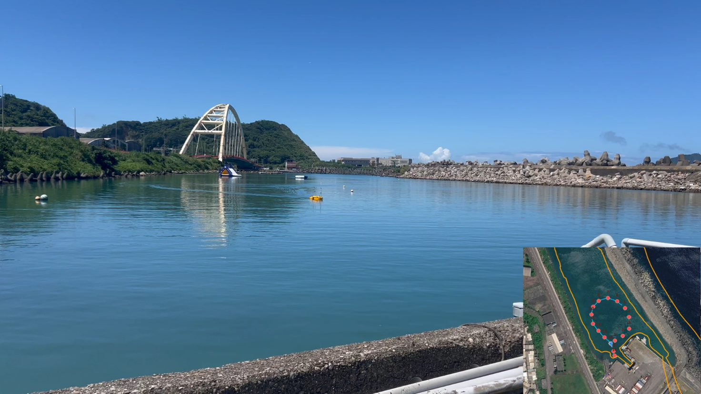
09 · 資源
延伸閱讀
主要參考文獻
- Fossen, T. I. (2011). Handbook of Marine Craft Hydrodynamics and Motion Control. Wiley.
- Fossen, T. I., & Pettersen, K. Y. (2014). On USGES of proportional line-of-sight guidance laws. Automatica, 50(11).
- Fiorini, P., & Shiller, Z. (1998). Motion planning in dynamic environments using velocity obstacles. IJRR, 17(7).